Simulado 1
No meio do caminho
Para medir onde você está e ajustar o estudo enquanto o edital não sai.
30 dias após a compra
Material independente, sem vínculo com a Polícia Judiciária Civil de Mato Grosso, com o Governo de Mato Grosso nem com a banca.

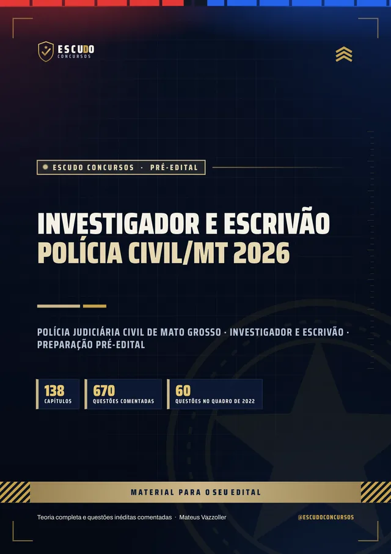
670questões
comentadas
ConcursoPolícia Civil/MT2026 · Investigador e Escrivão
Briefing
O edital de Investigador e Escrivão da Polícia Judiciária Civil de Mato Grosso ainda não saiu. O último concurso, o do Edital 001/2022-SESP/PJC/MT (UFMT), teve a validade encerrada em junho de 2026, e um novo concurso está previsto no orçamento do Estado. Quem começa agora chega na frente. Um curso só para os dois cargos, porque o programa é comum: feito sobre a prova de 2022, atualizado para a lei de hoje, com 5 alternativas, redação e gabarito comentado.
Pré-edital: baseado no último edital (nº 001/2022-SESP/PJC/MT, UFMT). Atualizado quando sair o novo
de R$ 47 por 21% OFF
R$37
com o cupom PJCMT37 até 31/12/2026. Pelo botão, o cupom já vai preenchido.
R$47
Curso completo, com acesso imediato.
Terreno
O concurso
O último concurso foi o do Edital 001/2022-SESP/PJC/MT, publicado em 5 de janeiro de 2022 e organizado pela UFMT, com cadastro de reserva para Escrivão de Polícia e para Investigador de Polícia. A validade terminou em junho de 2026. Há um novo concurso previsto no orçamento do Estado, mas não há, por enquanto, edital, banca definida nem número de vagas anunciado.
O Anexo III do edital de 2022 diz que os conteúdos programáticos são comuns aos dois cargos. Por isso o curso serve a Investigador e a Escrivão: a prova é a mesma, e só o Escrivão faz, depois, a prova prática de digitação. O curso segue o programa de 2022 e o atualiza: entra a Lei 14.133/2021 no lugar das leis de licitação revogadas, o Estatuto da Pessoa Idosa e a LC 851/2026 de Mato Grosso, e a Lei Orgânica Nacional das Polícias Civis entra como "pode cair".
Estudar agora pelo programa de 2022 economiza meses. Quando o edital sair, o programa será conferido item por item e o curso, ajustado.
| Grupo | Disciplinas | Questões |
|---|---|---|
| I | Língua Portuguesa | 10 |
| II | Princípios de Ética e de Filosofia | 2 |
| II | História e Geografia de Mato Grosso e Atualidades | 3 |
| II | Raciocínio Lógico | 5 |
| III | Noções de Informática | 10 |
| III | Noções de Direito Administrativo | 5 |
| III | Noções de Direito Constitucional | 5 |
| III | Noções de Direito Penal | 5 |
| III | Noções de Direito Processual Penal | 5 |
| III | Legislação Penal Especial | 5 |
| III | Organização e Estatuto da PJC-MT (LC 407/2010) | 5 |
| RED | Redação (prova dissertativa, nota de 0 a 10) | 0 a 10 |
| Prova de 2022: 60 questões de A a E, 1 ponto cada, em três grupos (I, Básicos; II, Gerais; III, Específicos), mais a redação. O programa do próximo concurso será conferido quando o edital sair. | 60 |
Atualização
Do edital de 2022 para hoje
Lei 14.133/2021: a Lei 8.666/1993 e a Lei 10.520/2002, que o edital de 2022 cobrava, estão revogadas desde 1º de abril de 2023. O curso estuda licitações pela lei nova, com nota sobre as antigas.
LC 851/2026 de Mato Grosso: alterou o Estatuto da PJC-MT (LC 407/2010) e o regime dos servidores (LC 04/1990). O curso traz os dois pela redação vigente em 16/11/2026.
Estatuto da Pessoa Idosa e programa de Informática: o Estatuto do Idoso passou a se chamar Estatuto da Pessoa Idosa (Lei 14.423/2022). O edital de 2022 cita Windows 10 e Ubuntu 20.04, e o curso mantém esses nomes e acrescenta o que muda no Windows 11.
Lei Orgânica Nacional das Polícias Civis (Lei 14.735/2023): não estava no edital de 2022, mas os editais recentes de Polícia Civil a trazem. Entra como "pode cair", em 5 capítulos, e o edital novo vai dizer se fica.
Protocolo
O formato
Você estuda lendo, no seu ritmo, pela área de membros da Hotmart ou com os arquivos baixados. O curso segue o programa da prova de 2022 (Edital 001/2022-SESP/PJC/MT), disciplina por disciplina, com a legislação federal e de Mato Grosso conferida no texto oficial vigente em 16/11/2026. A prova prática de digitação, que só o Escrivão faz, se treina no teclado: o curso explica como ela funciona, mas não substitui o treino. Quando sair o edital novo, vale o que ele disser.
Reconhecimento
Páginas reais do PDF
Toque numa página para ver em tamanho maior.
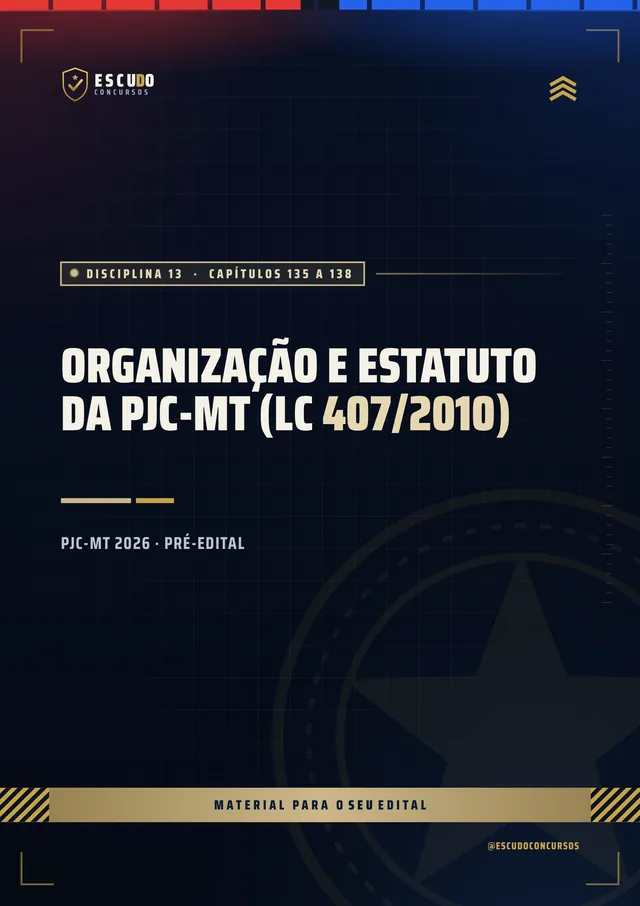
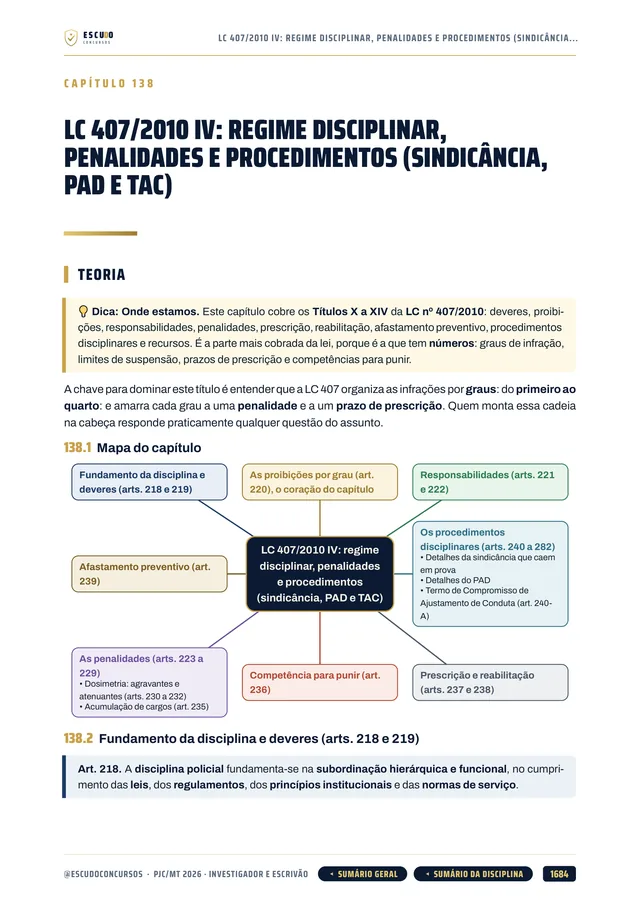
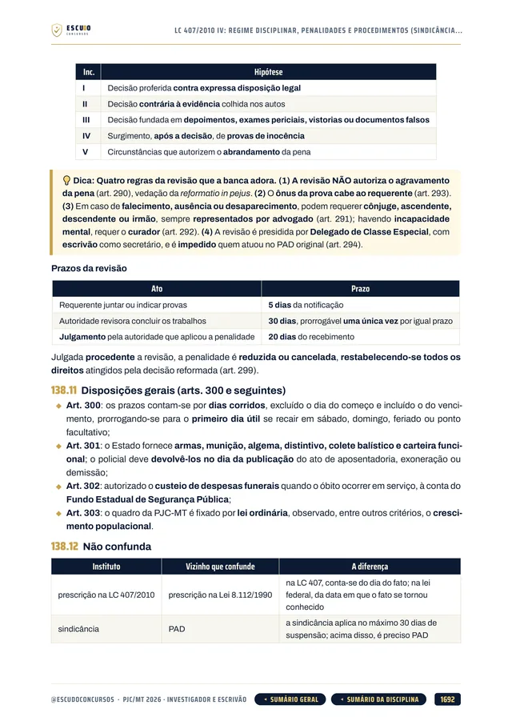
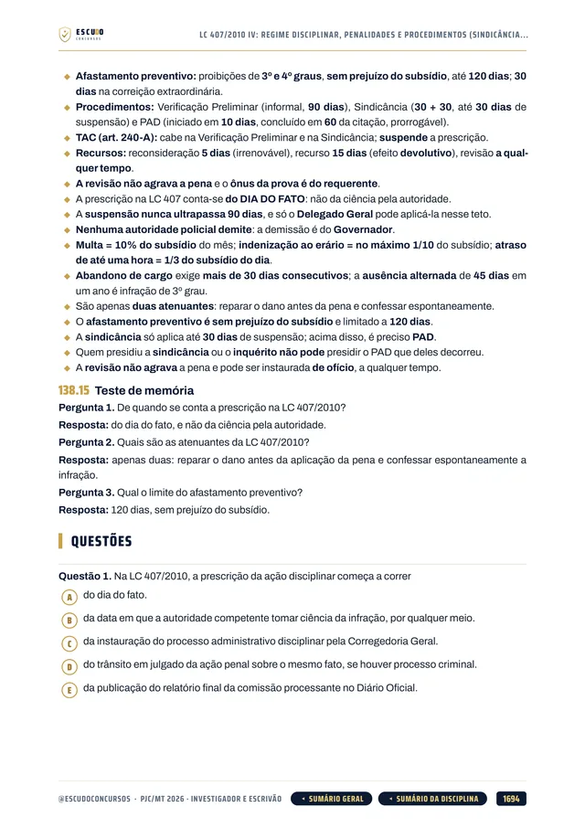
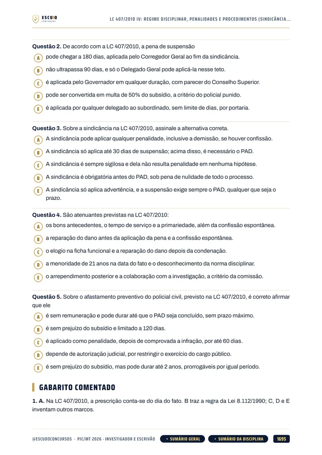
100% em PDF · Garantia de 7 dias · Pagamento pela Hotmart
Equipamento
O que você recebe
Curso em PDF organizado em 23 módulos (o de abertura, 20 pelas disciplinas e blocos da prova e 2 de simulado), com 1.696 páginas no padrão visual ESCUDO, para ler no computador, no tablet, no celular ou no app da Hotmart. Não há videoaulas.
138 capítulos cobrindo o programa de 2022, atualizado: Língua Portuguesa, Redação, Ética e Filosofia, História e Geografia de Mato Grosso e Atualidades, Raciocínio Lógico, Informática, Direito Administrativo, Constitucional, Penal, Processual Penal, Legislação Penal Especial, Lei Orgânica Nacional das Polícias Civis e Organização e Estatuto da PJC-MT.
670 questões inéditas com 5 alternativas, de (A) a (E), todas com gabarito comentado: por que a correta está correta e onde está o erro de cada uma das outras.
Organização e Estatuto da PJC-MT (LC 407/2010) em 4 capítulos: natureza e estrutura, carreira e ingresso, direitos e remuneração, e o regime disciplinar com sindicância, PAD e TAC, a parte da lei que mais traz número.
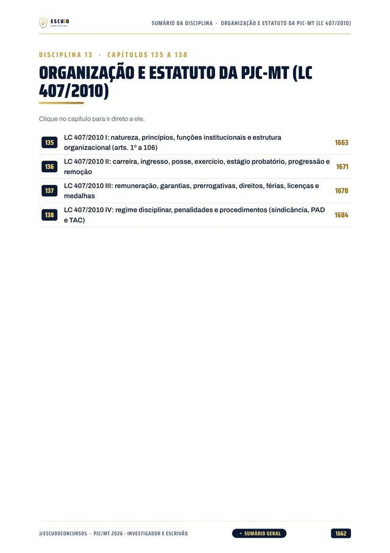
Redação em 3 capítulos: as quatro habilidades que a UFMT corrigiu em 2022, como montar repertório e tese e cinco propostas comentadas sobre segurança pública e a realidade de Mato Grosso.
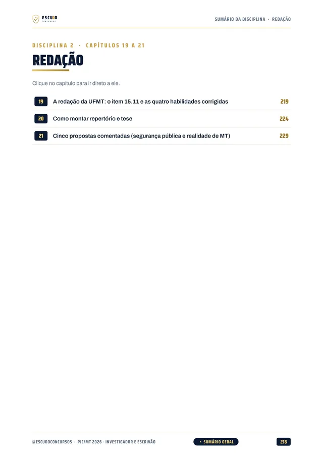
Pegadinhas e quadros "não confunda" ao longo da teoria, para você não cair nas armadilhas que a banca costuma montar.
Teoria com recursos para memorizar: mapa de cada capítulo, esquemas, revisão relâmpago e teste de memória no fim de cada capítulo.
Navegação clicável: do sumário você vai direto à disciplina e ao capítulo, e volta pelos botões do rodapé.
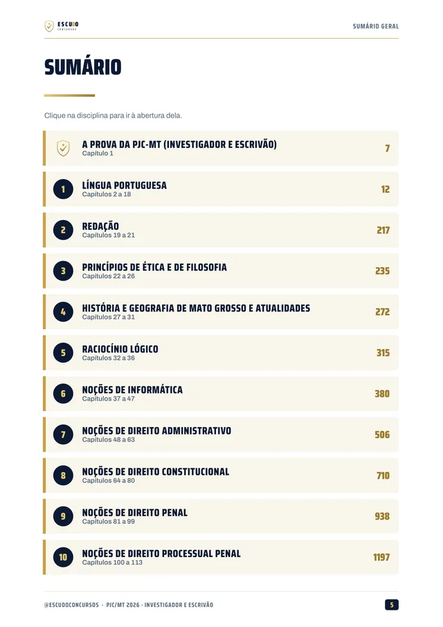
2 simulados inéditos de 60 questões de A a E, no formato da prova de 2022 (3 grupos, 1 ponto por questão), cada um com caderno de comentários.
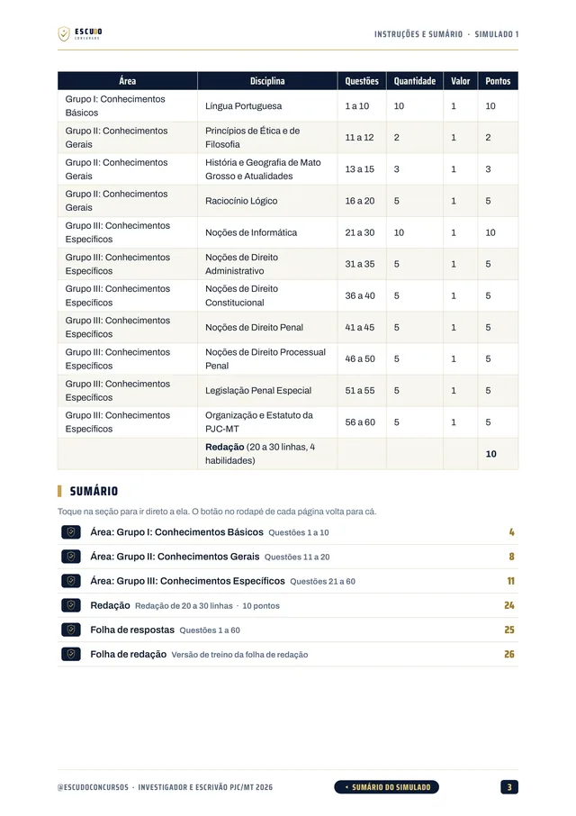
Uma redação em cada simulado, com proposta, textos de apoio, folha de redação e padrão de correção pelos quatro critérios.
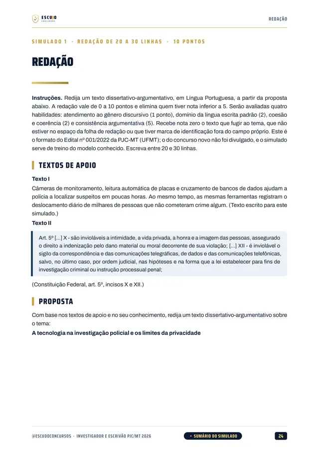
Plano de ação
Área de membros
| Módulo | Conteúdo | Liberação |
|---|---|---|
| M0 Comece aqui | Apresentação + capítulo 001 (como é a prova e como usar o curso). Bônus: PDF completo para baixar e imprimir | Na compra; o PDF completo no 8º dia |
| M1 Língua Portuguesa I | Capítulos 002 a 009 | Na compra |
| M2 Língua Portuguesa II | Capítulos 010 a 018 | Na compra |
| M3 Redação | Capítulos 019 a 021 | Na compra |
| M4 Princípios de Ética e de Filosofia | Capítulos 022 a 026 | Na compra |
| M5 História e Geografia de Mato Grosso e Atualidades | Capítulos 027 a 031 | Na compra |
| M6 Raciocínio Lógico | Capítulos 032 a 036 | Na compra |
| M7 Informática I | Capítulos 037 a 042 | Na compra |
| M8 Informática II | Capítulos 043 a 047 | Na compra |
| M9 Direito Administrativo I | Capítulos 048 a 055 | Na compra |
| M10 Direito Administrativo II | Capítulos 056 a 063 | Na compra |
| M11 Direito Constitucional I | Capítulos 064 a 072 | Na compra |
| M12 Direito Constitucional II | Capítulos 073 a 080 | Na compra |
| M13 Direito Penal I | Capítulos 081 a 090 | Na compra |
| M14 Direito Penal II | Capítulos 091 a 099 | Na compra |
| M15 Direito Processual Penal I | Capítulos 100 a 106 | Na compra |
| M16 Direito Processual Penal II | Capítulos 107 a 113 | Na compra |
| M17 Legislação Penal Especial I | Capítulos 114 a 121 | Na compra |
| M18 Legislação Penal Especial II | Capítulos 122 a 129 | Na compra |
| M19 Lei Orgânica Nacional das Polícias Civis (pode cair) | Capítulos 130 a 134 | Na compra |
| M20 Organização e Estatuto da PJC-MT | Capítulos 135 a 138 | Na compra |
| M21 Simulado 1 | 60 questões, redação e caderno de comentários | 30 dias após a compra |
| M22 Simulado 2 | 60 questões, redação e caderno de comentários | 60 dias após a compra |
Treinamento
Treino no formato da prova
Cada simulado tem 60 questões de A a E, na distribuição da prova de 2022 (Português 10; Ética e Filosofia 2; História e Geografia de MT e Atualidades 3; Raciocínio Lógico 5; Informática 10; Administrativo, Constitucional, Penal, Processo Penal, Legislação Penal Especial e Estatuto da PJC-MT 5 cada), mais uma redação com proposta e padrão de correção, e caderno de comentários. O formato será conferido quando o edital sair.
Simulado 1
Para medir onde você está e ajustar o estudo enquanto o edital não sai.
30 dias após a compra
Simulado 2
Para conferir a evolução depois de mais um mês de estudo.
60 dias após a compra
Perfil
Para quem é
Para quem vai prestar o concurso de Investigador ou de Escrivão da Polícia Civil de Mato Grosso e quer começar agora, pelo programa da última prova, com a LC 407/2010 e a redação cobertas por inteiro.
Proteção
Você tem 7 dias de garantia pela Hotmart. Se não for o que você esperava, pede o reembolso pela própria Hotmart, dentro do prazo.
Cronograma
Sem surpresa na área de membros
Na compra: todas as disciplinas em PDF, uma por módulo, com a teoria e as questões comentadas. É o curso inteiro, para começar a estudar no mesmo dia.
8 dias após a compra: o PDF completo para imprimir. É o mesmo conteúdo dos módulos num arquivo só, liberado depois da garantia de 7 dias.
Simulado 1: 30 dias após a compra, para medir onde você está no meio da preparação.
Simulado 2: 60 dias após a compra, porque ainda não há data de prova marcada.
O PDF completo e os simulados aparecem bloqueados na área de membros até a data de cada um: não é conteúdo faltando, é a liberação programada.
Instrução
Dúvidas
Não. É um curso 100% em PDF: teoria, questões comentadas e simulados para ler e resolver.
O acesso é imediato depois da confirmação do pagamento, pela área de membros da Hotmart (web ou app). O PDF completo para baixar e imprimir é liberado no 8º dia.
O Simulado 1 é liberado 30 dias após a compra e o Simulado 2, 60 dias após a compra.
Vale. O concurso de 2022 já está encerrado e o novo ainda não tem edital, mas o grosso da prova (Português, Raciocínio Lógico, Informática, Administrativo, Constitucional, Penal, Processo Penal e legislação penal especial) não depende do edital, e o curso já traz a LC 407/2010 conferida no texto oficial. Quando o edital sair, vale o que ele disser.
Ainda não existe: o edital novo não foi publicado. O curso segue o programa do Edital 001/2022-SESP/PJC/MT, comum aos dois cargos (Língua Portuguesa, Ética e Filosofia, História e Geografia de MT e Atualidades, Raciocínio Lógico, Informática, Direito Administrativo, Constitucional, Penal, Processual Penal, Legislação Penal Especial e Organização e Estatuto da PJC-MT), mais a Redação, atualizado para a Lei 14.133/2021 e a LC 851/2026. Quando o edital sair, o programa será conferido item por item e o curso, ajustado.
Ainda não foi definida. A banca do último concurso foi a UFMT, e as questões do curso seguem o estilo dela: cinco alternativas, Português com gêneros discursivos, Ética e Filosofia de caráter filosófico e legislação cobrada pela letra da lei. Se a banca mudar, o curso é ajustado ao estilo da nova.
Não há edital novo. Em 2022, a prova objetiva teve 60 questões de múltipla escolha com cinco alternativas, de 1 ponto cada, em três grupos (Básicos, Gerais e Específicos), e quem não fizesse 50% de cada grupo era eliminado. Houve também uma redação de 0 a 10, com mínimo de 50%, e as duas provas duraram 4h30 no total. Só o Escrivão fez ainda a prova prática de digitação, de 6 minutos e 600 toques líquidos no mínimo. O curso segue o formato de 2022 e será conferido quando o edital sair.
Não. As 670 questões de treino e as dos simulados são inéditas, escritas no estilo da banca a partir do programa de 2022.
Serve para os dois. O Anexo III do edital de 2022 diz que os conteúdos programáticos são comuns aos dois cargos, então a prova objetiva e a redação são as mesmas. A diferença é a função na carreira e uma etapa a mais para o Escrivão, a prova prática de digitação.
Não. O curso explica como a prova prática funciona, mas a digitação se treina no teclado, e o curso não substitui essa prática.
Não se sabe. Ela não estava no edital de 2022, mas os editais recentes de Polícia Civil a trazem, por isso o curso tem 5 capítulos sobre ela, marcados como "pode cair". O edital novo vai dizer se ela entra.
Você tem 7 dias de garantia pela Hotmart. Se não for o que você esperava, pede o reembolso.
Missão
Polícia Civil/MT 2026 · Investigador e Escrivão
de R$ 47 por 21% OFF
R$37
com o cupom PJCMT37 até 31/12/2026.
R$47
Curso completo, com acesso imediato.
Material para o SEU edital. ESCUDO Concursos.
Continue estudando
 PM/SC 2026 · Instituto AOCPSoldado da Polícia Militar de Santa Catarina
PM/SC 2026 · Instituto AOCPSoldado da Polícia Militar de Santa Catarina CFO PM/MG 2027 · Edital aberto · CRS/PMMGCadete do CFO da Polícia Militar de Minas Gerais
CFO PM/MG 2027 · Edital aberto · CRS/PMMGCadete do CFO da Polícia Militar de Minas Gerais GCM Salvador/BA 2026 · FGVGuarda Civil Municipal de Salvador/BA
GCM Salvador/BA 2026 · FGVGuarda Civil Municipal de Salvador/BA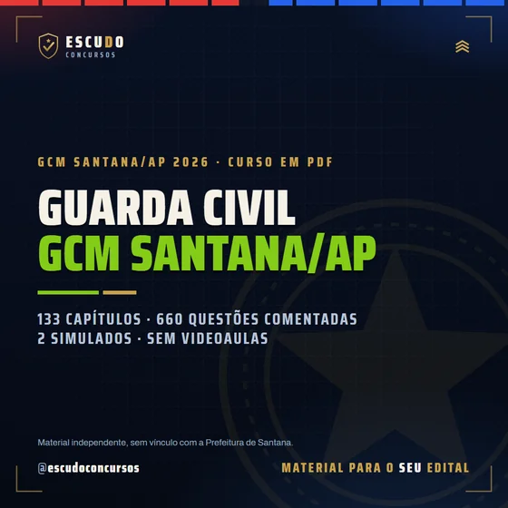
GCM Santana/AP 2026 · IDCAPGuarda Civil Municipal de Santana/AP